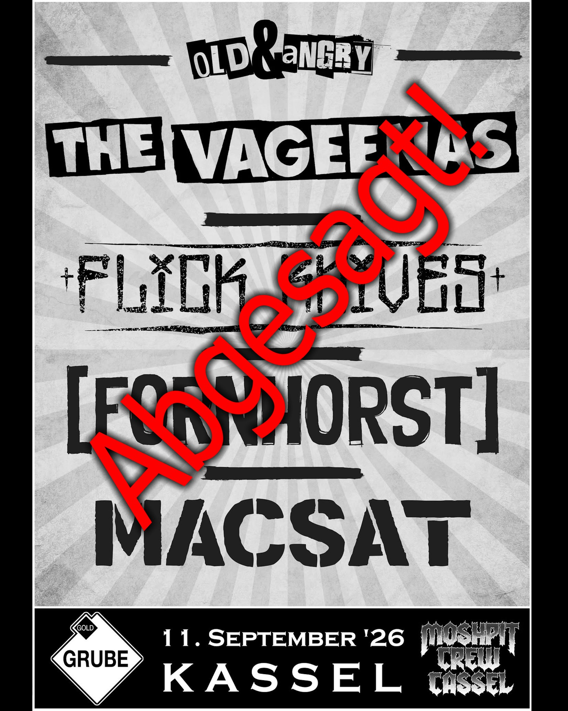

Kolumne
Ein Club kann keine Likes auszahlen
Über ein abgesagtes Clubkonzert, späten Vorverkauf und die Frage, warum kleine Bühnen von Likes keine Rechnungen bezahlen können.
Kolumne anhören
Audio: KI-Version meiner eigenen Stimme · Text & Redaktion: Burg

Das Konzert findet nicht statt.
Am 11. September sollten The Vageenas, Fornhorst, Flick Knives und MACSAT in der Goldgrube Kassel spielen. Zwanzig Euro im Vorverkauf. Laut einem von Fornhorst veröffentlichten Beitrag waren am Ende zehn Karten verkauft. Die Goldgrube zog die Reißleine: zu wenig Vorverkauf, Absage, bereits gekaufte Tickets werden erstattet.
Und irgendwo sagt jetzt vermutlich jemand:
„Zum Glück habe ich kein Ticket gekauft. Das Konzert wurde ja abgesagt.“
Worauf jemand anderes antworten könnte:
„Hättest du eins gekauft, wäre es vielleicht nicht abgesagt worden.“
Natürlich rettet kein einzelner Mensch mit einer einzelnen Karte einen ganzen Konzertabend. Aber wenn zwanzig Leute vorsichtshalber warten, sieht der Vorverkauf eben auch nach zwanzig fehlenden Leuten aus. So entsteht eine wunderbar beschissene Logik: Man kauft nicht, weil die Veranstaltung vielleicht ausfällt. Dann fällt sie wegen des schwachen Vorverkaufs aus. Anschließend fühlt man sich in der Entscheidung bestätigt, nicht gekauft zu haben.
Das ist kein Vorwurf an den einzelnen Menschen. Aus seiner Sicht kann das völlig vernünftig sein. Gemeinsam produzieren wir nur leider manchmal genau das Ergebnis, vor dem sich jeder schützen wollte.
Ich kenne das Sofa
Bevor jetzt jemand glaubt, ich würde vom hohen Ross aus Eintrittskarten verteilen: Ich habe selbst jahrelang kaum Konzerte besucht. Nicht aus Verachtung für kleine Bühnen, sondern weil das Leben zwischendurch diese unangenehme Angewohnheit entwickelt, ständig stattzufinden.
Arbeit, Rechnungen und Verpflichtungen fraßen den Tag. Dazu kamen Fahrt, Eintritt und der Rückweg mitten in der Nacht. Am nächsten Morgen sollte man wieder wie ein halbwegs brauchbares Mitglied der Gesellschaft aussehen. Irgendwann wurde aus „Da müsste ich hin“ ein „Beim nächsten Mal“.
Meine Situation hat sich erst vor einigen Wochen verändert. Seitdem hole ich offenbar etwas nach und gehe wieder zu kleinen Festivals, in Clubs oder zu Abenden, bei denen mir der halbe Flyer nichts sagt. Es tut verdammt gut, wieder dort zu stehen, wo Musik gerade passiert.
Deshalb verstehe ich den Menschen auf dem Sofa und ebenso, wenn zwanzig Euro fair, aber trotzdem nicht drin sind. Mit Anfahrt und einer möglichen Übernachtung wird aus einem günstigen Konzert schnell ein Betrag, der mit Familie oder knappem Konto überhaupt nicht günstig ist. Niemand schuldet Punk seine letzten Kröten.
Was mich ratlos macht, ist eher die Verteilung. Für einen großen Namen werden achtzig Euro und mehr bezahlt, dazu Hotel, Fahrt und ein Bier zum Preis eines kleinen Gebrauchtwagens. Drei Wochen später spielen mehrere kleinere Bands für zwanzig Euro, und der Vorverkauf bewegt sich so entschlossen wie ich montagmorgens vor dem Wecker.
Große Bands haben ihr Publikum verdient. Ich war selbst oft genug da, fand es geil und würde wieder hingehen. Nur wächst Qualität nicht automatisch mit der Größe des Schriftzugs auf dem Plakat.
Die Band, die man noch nicht kennt
Fornhorst kannte ich zunächst vom Album und später durch ein Interview mit Norman. Danach war ich ziemlich positiv überrascht. MACSAT liefen mir beim WISPA-Festival über den Weg; anschließend habe ich sie interviewt. Sympathische Leute mit verdammt starker Musik. Flick Knives entdeckte ich über Aggro-Punk. Sie treffen ziemlich genau den Nerv in mir, auf dem seit Jahren „Rancid“ gekritzelt steht, ohne deshalb wie eine Kopie zu klingen.
The Vageenas kenne ich bislang gar nicht.
Früher hätte mich das zögern lassen. Heute ist es eher ein Grund hinzugehen. Wenn mehrere Bands auf einem Flyer stehen, die mich interessieren, will ich wissen, warum die unbekannte danebensteht. Im besten Fall fährt man später wegen ihr mit einer Platte unter dem Arm nach Hause und fragt sich, wie man sie so lange übersehen konnte.
Zu diesem Problem gehört auch, dass Menschen mit ihren Bands älter werden. Wer sie seit zwei Jahrzehnten hört, muss den Konzertabend heute womöglich gegen Frühschicht, Familienalltag oder den eigenen Rücken durchsetzen und wählt genauer aus. Jüngere übernehmen nicht automatisch dieselben Bands und Gewohnheiten. Das ist kein Vorwurf. Die nächste Generation ist keine kulturelle Nachfüllpackung für das, was wir gerne behalten möchten. Nur entsteht dazwischen eben manchmal ein Loch.
Entdeckung war früher nicht automatisch besser, aber schwerer zu vertagen. Flyer und Plakate blieben hängen, im Fanzine stand ein Termin, und beim Bier erzählte jemand von einer Band. Weniger Konzerte schafften es bis zu mir, doch ihre Hinweise hatten Gewicht. Mancher Flyer hing wochenlang am Kühlschrank.
Heute läuft Konzertwerbung über Instagram und Facebook, taucht in Stories, Reels und Eventseiten auf und verschwindet gerade deshalb so schnell. Der Hinweis rauscht zwischen Weltuntergang, Frühstücksfoto und einem Video hindurch, in dem jemand etwas auspackt, das fünf Minuten vorher noch niemand gebraucht hat. Alles ist sichtbar, aber das Konzert wird zu einem weiteren Rechteck im Feed. Freitagabend denkt man: Da war doch irgendwas.
Dazu muss ein Konzert gegen Serienabend, Gaming und den übrigen Freizeitbetrieb bestehen, während Musik jederzeit griffbereit liegt. Wer eine Band verpasst, findet einen Mitschnitt. Das ersetzt keinen verschwitzten Club, nimmt dem Verpassen aber seine alte Endgültigkeit. Man redet sich ein, man könne das später nachholen.
Dieses „später“ endet nur erstaunlich oft bei „nie“.
Das Fieberthermometer
Ein Konzert kostet schon Geld, bevor der erste Akkord gespielt wurde. Personal, Technik, Miete, Unterkunft, Sprit und Werbung lassen sich nicht mit Hoffnung bezahlen. Dass an der Abendkasse plötzlich doch noch sechzig Leute auftauchen, wäre schön. Vorher bezahlen kann man damit allerdings nichts.
Der Vorverkauf ist deshalb nicht das Problem. Er ist das Fieberthermometer.
Zehn verkaufte Karten bedeuten nicht, dass am Ende nur zehn Menschen gekommen wären. Am Ende wären es womöglich fünfzig oder sogar hundert geworden. Nur muss vorher jemand entscheiden, ob er auf diese Hoffnung Geld setzt. Irgendwann gewinnt dann die Mathematik, diese alte Verräterin.
Bei manchen könnte außerdem noch die Corona-Zeit im Hinterkopf sitzen. Damals wurden Veranstaltungen abgesagt, Gutscheine ersetzten zeitweise Rückzahlungen und um einbehaltene Gebühren wurde jahrelang gestritten. Ich kann nicht belegen, dass Menschen deshalb heute grundsätzlich später kaufen. Wer damals schlechte Erfahrungen gemacht hat und nun lieber wartet, erscheint mir aber nicht völlig rätselhaft.
Leider führt auch diese nachvollziehbare Vorsicht zurück an denselben Ausgangspunkt: Wenn genug Menschen erst kaufen wollen, sobald die Durchführung sicher ist, kann der Veranstalter diese Sicherheit nie aus dem Vorverkauf ablesen.
Nicht dasselbe Geschäft
Bei kleinen Strukturen wirkt ein schlechter Abend anders als bei großen. Ein Mailorder, der im Keller Pakete packt, ein mittelständischer Händler mit Lager und Amazon verkaufen formal alle Waren. Trotzdem würde niemand behaupten, sie betrieben dasselbe Geschäft unter denselben Bedingungen.
Mit Veranstaltungen ist es ähnlich. Ein kleiner Club kann ein schwaches Konzert nicht beliebig zwischen großen Tourneen, Sponsoren und anderen Städten verstecken. Er hat weniger Puffer, trägt das Risiko unmittelbarer und muss irgendwann entscheiden, wie viele schlechte Abende er sich noch leisten kann. Ein Konzertkonzern kennt ebenfalls Risiken, kann sie aber anders verteilen.
Die aktuellen Zahlen passen leider ziemlich gut zu diesem Bild: Der allergrößte Teil der Livemusik findet in kleinen Spielstätten mit höchstens 500 Plätzen statt. Dieses Segment kommt bei den Besucherzahlen kaum über das Niveau von 2019 hinaus, während große Veranstaltungen deutlich stärker gewachsen sind. Die kleinen Bühnen bilden weiterhin das Rückgrat der Livemusik. Das Wachstum findet nur offenbar woanders statt.
Wenn ein kleiner Ort aufgibt, wartet nicht automatisch der nächste kleine Ort hinter der Ecke. Häufig bleibt nur die größere, sicherere und planbarere Variante übrig. Dort funktionieren bekannte Namen verlässlicher als Experimente, während der Nachwuchs den Dienstagabend bekommt, falls der Dienstagabend finanziell überhaupt noch lebt.
Kulturverlust beginnt nicht erst, wenn ein Club endgültig abschließt. Er beginnt auch dort, wo nach mehreren schlechten Abenden keine unbekannte Band mehr gebucht wird oder ein abgesagtes Festival samt Helfern, Kontakten und Erfahrung nicht zurückkehrt. So sieht Kulturverlust oft aus. Nicht mit Trauermarsch, Pressekonferenz und betroffenem Gesichtsausdruck. Jemand schaut auf zehn verkaufte Karten, klappt den Laptop zu und veranstaltet diesen Abend kein zweites Mal.
Anwesenheit
Ich will daraus keine Eintrittskartenpflicht für Menschen mit Lederjacke bauen. Wer Kinder versorgt, Schicht arbeitet, krank ist, weit weg wohnt oder schlicht keine Kraft mehr hat, bleibt zu Hause. Das ist kein Verrat an der Szene. Ich war lange genug selbst kaum unterwegs, um jetzt nicht den Punkpapst mit Abendkasse zu spielen.
Trotzdem bleibt eine unbequeme Wahrheit: Wenn wir kleine Clubs wollen, müssen dort oft genug Menschen stehen. Wer unbekannte Bands entdecken möchte, muss ihnen irgendwann erlauben, unbekannt auf einer Bühne zu spielen. Eine Szene bleibt nicht am Leben, weil wir ihre Existenz grundsätzlich sympathisch finden.
Ein Club kann keine Likes auszahlen. Auch „Wäre gern gekommen“ begleicht weder Gage noch Miete, und der Schade-Smiley wird vom Finanzamt weiterhin nicht als Zahlungsmittel anerkannt.
Das Konzert in Kassel ist abgesagt. Auch zwanzig verkaufte Karten hätten womöglich nichts geändert; an der Abendkasse hätten zugleich noch genug Leute auftauchen können. Das weiß heute niemand.
Die Absage ist verständlich. Das Zögern beim Ticketkauf ist es ebenfalls. Genau darin steckt der ganze Mist.
Für das Verschwinden dieser Kultur braucht es am Ende weder ein Verbot noch den endgültigen Ausverkauf. Es reicht, wenn wir alle denken, irgendjemand anderes würde schon hingehen.
Die Bands
- The Vageenas auf Instagram
- Fornhorst – offizielle Website
- Flick Knives auf Instagram
- MACSAT – offizielle Website
Interviews
- Interview mit Norman von FORNHORST – aufgenommen vor etwa zwei Jahren
- MACSAT beim WISPA-Festival 2026 – Interview ab Minute 39:28
Quellencheck: Absage, Line-up und Erstattung sind über die offizielle Veranstaltungsseite der Goldgrube Kassel belegt; der ursprüngliche Vorverkaufspreis über den offiziellen Ticketshop. Die Zahl von zehn verkauften Karten stammt aus dem von Fornhorst veröffentlichten Beitrag und ist entsprechend als Aussage der Band gekennzeichnet. Hinweise zur Corona-Gutscheinlösung und zu Rückerstattungsstreitigkeiten stammen von Bundesregierung und Verbraucherzentrale; die Marktdaten zur Livemusik vom Deutschen Musikinformationszentrum. Persönliche Konzert- und Szeneerfahrungen sind Burg-Erfahrungen.